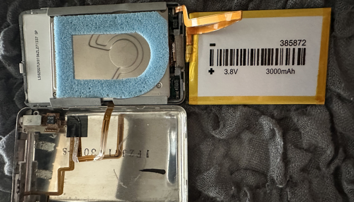
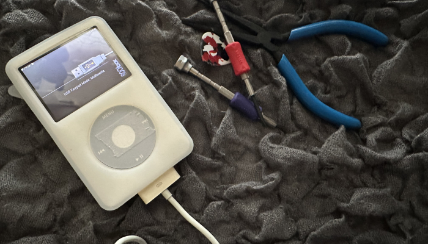

  아침에 갑자기, 집에 굴러다니던 아이팟 5 보드가 생각이났다. 굴러다니는 부품들모으면 하나 만들 수 있을거같아서 아침에 이것저것 찾아봄. 아이팟 5 보드/프레임 아이팟 5.5 앞판/휠버튼/픽셀줄간액정 아이팟 6.5 160기가 두꺼운 뒷판+이어폰잭등기타부품(새것) 아이팟 7 160기가 하드디스크 3000배터리 굴러다니던 두꺼운 아이팟용 실리콘 케이스 일단 조립하니 바로 복원하라는 메시지가뜸. 간단하군? 하고 생각했으나 저 보드를 쳐박아놓은 이유가, PC에서 인식이 되지 않아서라는걸 깨달음. 30핀 포트쪽을 알콜로 닦아도보고 위아래로 눌러도보고 윈도우에도 붙여보고 맥에도 붙여보고 하다가, 핀을 좌우로 눌러봤더니 오른쪽으로 조금만 누르니 인식이 잘되네...? 한번 그랬더니 계속 잘되는거같다 은근히 간단한문제들이 깨닫기 전까지는 찾아내기 어려운거라는걸 다시한번 깨달음. 아이튠즈로 음악좀 넣고 락박스 설치해서 파일좀 넣고 했는데 잘돌아간다. ....;;;;어..재미있어서 이 녀석 잘 쓸게될듯.